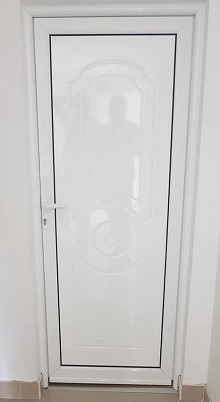
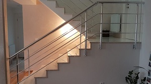

Aluminijumska stolarija
Zahvaljujući estetici, sigurnosti i funkcionalnosti koju pruža, aluminijum se smatra idealnim materijalom za izgradnju vrata i prozora. Vrata i prozori sa termičkim prekidom u kombinaciji sa odgovarajućim staklom i gumom nude visoku termo i zvučnu izolaciju.

Usled razvoja nove tehnologije, aluminijumska vrata i prozori su značajno unapređeni. Aluminijum ima određene prednosti u odnosu na PVC. Najveća prednost koju aluminijum pruža u odnosu na PVC je naravno estetika. Aluminijumska stolarija je tanja a samim tim izgleda elegantnije, pogotovo na novim zgradama i kućama.

Pored sigurnosti i postojanosti pri korišćenju, aluminijumski gelenderi se mogu kombinovati sa raznim vrstama materijala, kao što je drvo, beton, staklo i dr.